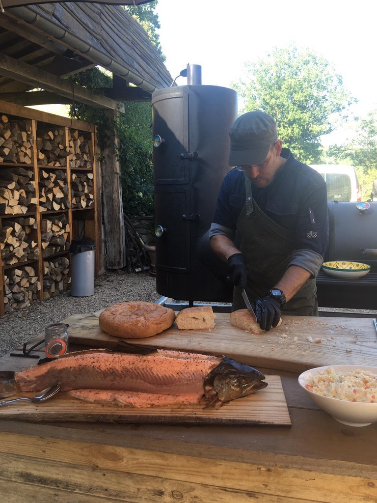

Hoe precies het vuur is uitgevonden is niet bekend, maar vuur bestond al natuurlijk. Denk maar aan
vulkaanuitbarstingen, bliksem e.d. belangrijker is dat onze verre voorouders vuur gingen gebruiken en
cultiveren. Waarschijnlijk eerst om er lekker warm
bij te worden en pas later om er voedsel mee te bereiden. Vlees en groenten werd hierdoor een stuk
makkelijker verteerbaar en smakelijker. Mooi meegenomen is het feit dat “gerookt voedsel” een langere
houdbaarheid heeft, waardoor het leven een
stuk aangenamer werd, nu was het ook mogelijk om te overleven in jaargetijden dat het voedsel schaars of
helemaal niet aanwezig was, en om bijvoorbeeld te verhuizen naar andere gebieden zonder dat je je
onderweg bezig moest houden met jagen. Wellicht
was anders de mensheid niet zo verspreidt geweest over aarde. De latere ontdekkingsreizigers maakten ook
gebruik van deze techniek en voegden er andere technieken als pekelen en inmaken aan toe om de soms
maandenlange barre tochten te overleven.
Door de eeuwen heen tot en met het heden blijft de BBQ een prominente rol spelen in onze keuken. Een
ieder kent de schranspartijen van de Romeinen met hele hertenbouten of de Ridders uit de middeleeuwen
die hele varkens roosteren boven een enorm
vuur tot de cowboys uit het wilde westen die wel raad wisten met een wilde buffel. Pas toen gas en
elektra geïntroduceerd werden voor huishoudelijk gebruik raakte de BBQ een beetje in vergetelheid. In de
jaren zeventig (toen iedereen graag een
huis met tuintje wilde) keerde de BBQ weer terug om nooit meer te verdwijnen. In de loop der jaren is in
de rest van de wereld de BBQ-cultuur verder ontwikkeld, maar zijn we in Nederland zo-goed-als stil
blijven staan. Slagers verzonnen allerhande
rare ‘sticks’ als ping-pong-sticks, kip-Hawaii-sticks en shashlick-varianten en sausfabrikanten gingen
los op sausen met namen als jopie, Salsa, Poesta, Samba en meer....
Maar zoals de meeste ondertussen weten;
Vlees of vis op de juiste manier klaargemaakt op de smoker/grill.. behoeft geen saus of kruid
meer!.
